同一個 BH-01，為什麼兩地長得不一樣？
BH-01 是家中祖父母選出的鳳梨釋迦候選株。目前在美農村與相距約 10 公里的臺東機場附近，各有上百株以它為接穗來源的嫁接株。接穗來源相同，機場附近的植株卻長得明顯較快。
兩地的地形不同：美農村位在山麓沖積扇，機場附近則是平原。河水流出山區時，粗的砂石先沉積在山麓，細的土粒被帶到更遠的平原。我推測兩地生長的差異，可能和土壤與水分條件有關，所以從三個方向做了簡易實驗：土本身的粗細、水怎麼進入土壤、灌溉水帶來了什麼。
這些都是用寶特瓶、水管這類簡單器材完成的初步觀察，不是正式的土壤分析。
兩地環境比較
美農村果園
- 地形：山麓沖積扇，緩坡地
- 海拔：約 180～200 公尺
- 土壤：偏粗，砂約 50%，有礫石（實驗一）
- 灌溉：卑南上圳水，香菇頭噴灌約 4 小時
- BH-01 生長：較慢
臺東機場附近果園
- 地形：平原
- 海拔：約 20～30 公尺
- 土壤：偏細，黏粒約 40%（實驗一）
- 灌溉：卑南圳水，每週淹灌一次、約 4 小時
- BH-01 生長：較快
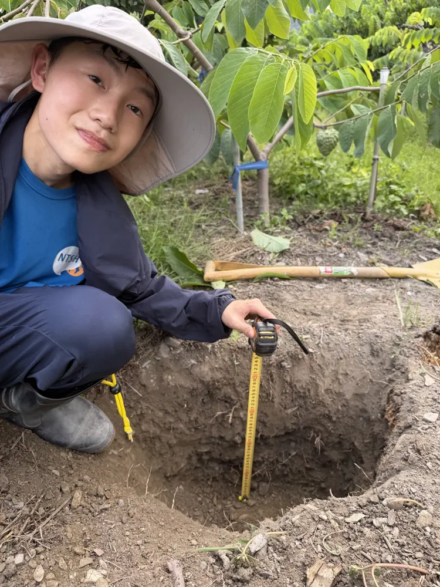
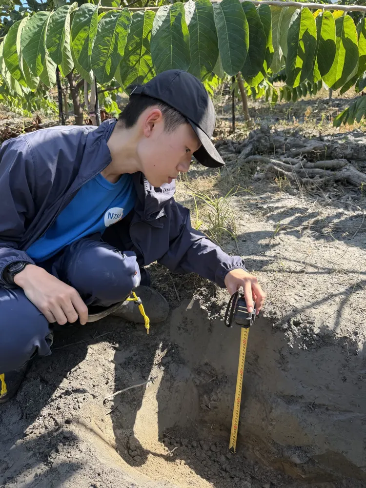
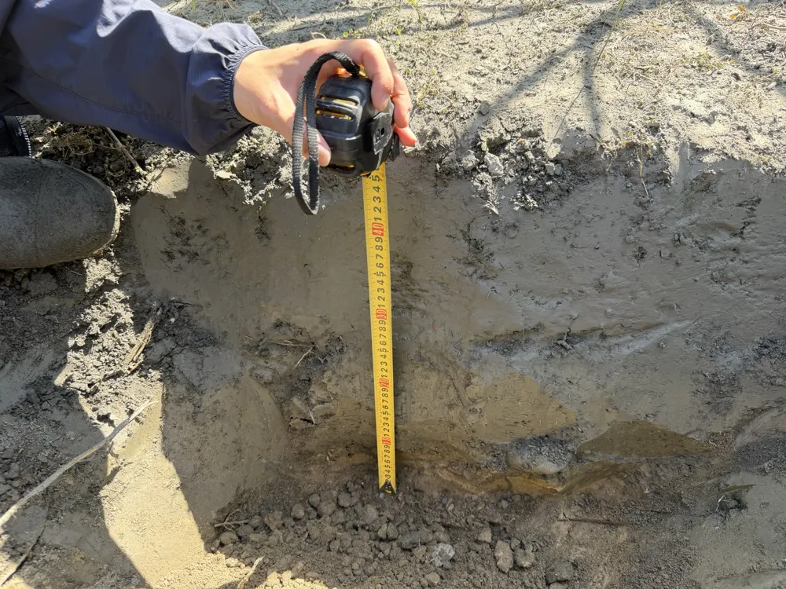
需要排除的變因：兩地的施肥、灌溉管理與氣候都不同；嫁接用的砧木是實生苗，本身也可能有差異。所以這些實驗只能找出「可能的原因」，還不能下結論。
實驗一｜土壤沉降觀察 已完成
想知道的問題：兩地的土壤，顆粒粗細真的不一樣嗎？深一點的土又有什麼不同？
- 在兩處果園的 BH-01 樹下滴水線各挖一個約 35 公分深的洞，從坑壁取 15 公分與 30 公分深的土，共 4 瓶。
- 土裝到寶特瓶約 8 公分高（T），加水，放少許洗衣粉讓顆粒分散，搖 3 分鐘後放平。
- 顆粒越大沉得越快：1 分鐘量沉積高度 A（砂）、2 小時量 B（砂＋坋）、24 小時量總高度 C。
砂 % ＝ A ÷ C 坋 % ＝（B − A）÷ C 黏 % ＝（C − B）÷ C
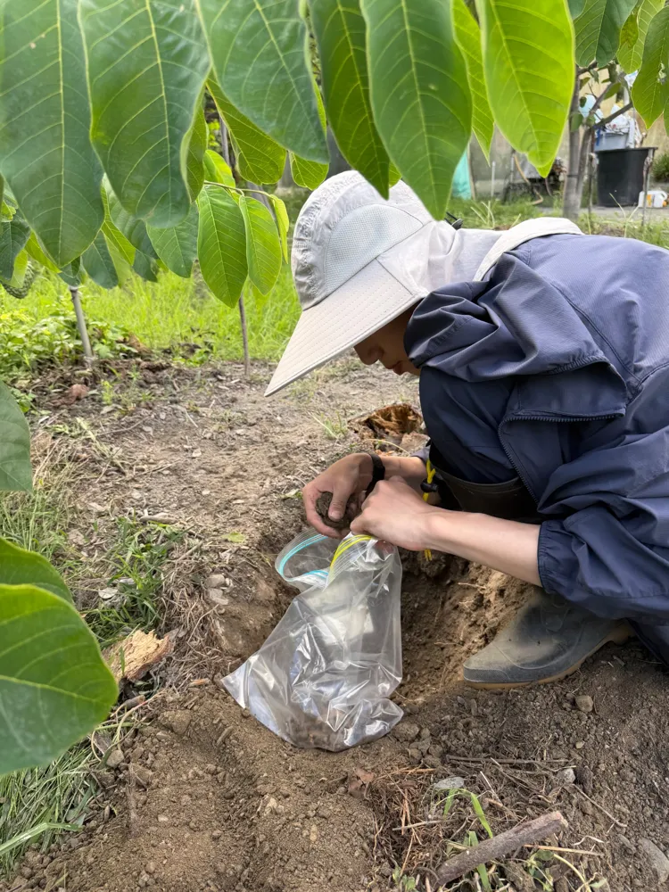
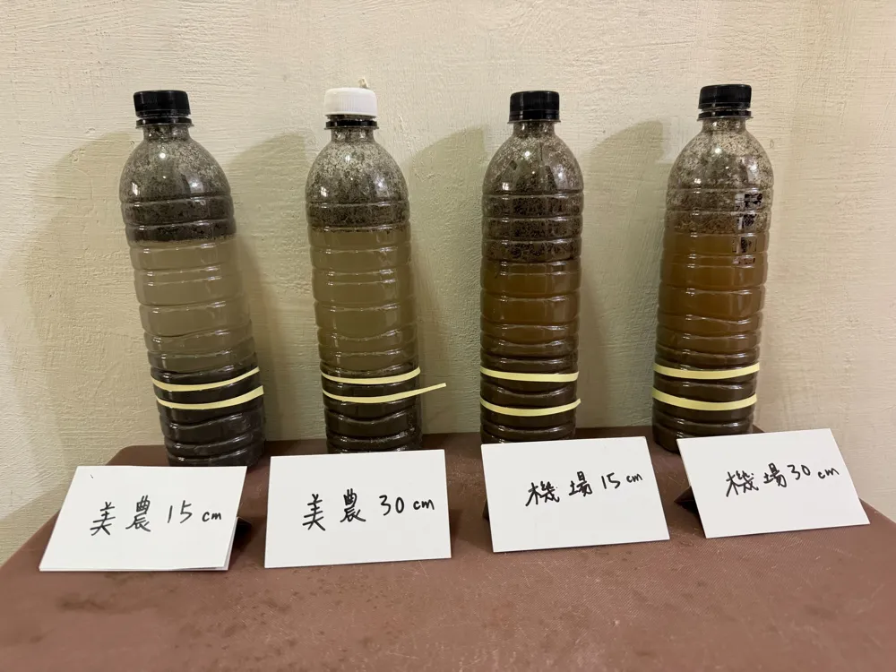
| 樣本 | A | B | C | 砂% | 坋% | 黏% |
|---|---|---|---|---|---|---|
| 美農村 15 | 4.0 | 6.2 | 8.1 | 49 | 27 | 23 |
| 美農村 30 | 4.3 | 6.3 | 8.0 | 54 | 25 | 21 |
| 機場附近 15 | 2.1 | 4.7 | 8.0 | 26 | 33 | 41 |
| 機場附近 30 | 2.3 | 4.9 | 8.0 | 29 | 33 | 39 |
單位：公分；T 都是 8 公分。礫石：美農村兩瓶多，機場附近 15 公分無、30 公分少。
限制：24 小時後水還很混濁，黏粒還沒完全沉下來，黏粒層也比較蓬鬆，所以比例只適合比較兩地，不是正式的土壤質地；礫石沒有先過篩，會被算進砂裡。下一次會先用 2 公釐篩網過篩。
實驗二｜土壤滲透速度 已完成
想知道的問題：兩地的土壤，讓水滲進去的速度一樣嗎？滲得太快，灌溉水和肥料容易流到根圈以下；滲得太慢，地面容易積水。
- 每處果園選 2 個點，都在 BH-01 樹下滴水線附近，草剪短；兩地都在灌溉後第 2 天測。
- 把 4 吋 PVC 管敲進土裡約 5 公分，先倒一次水讓土吸飽。
- 再倒水到 10 公分，每 5 分鐘記一次水位，共 30 分鐘。
滲透速度（公分／小時）＝ 30 分鐘下降公分數 × 2
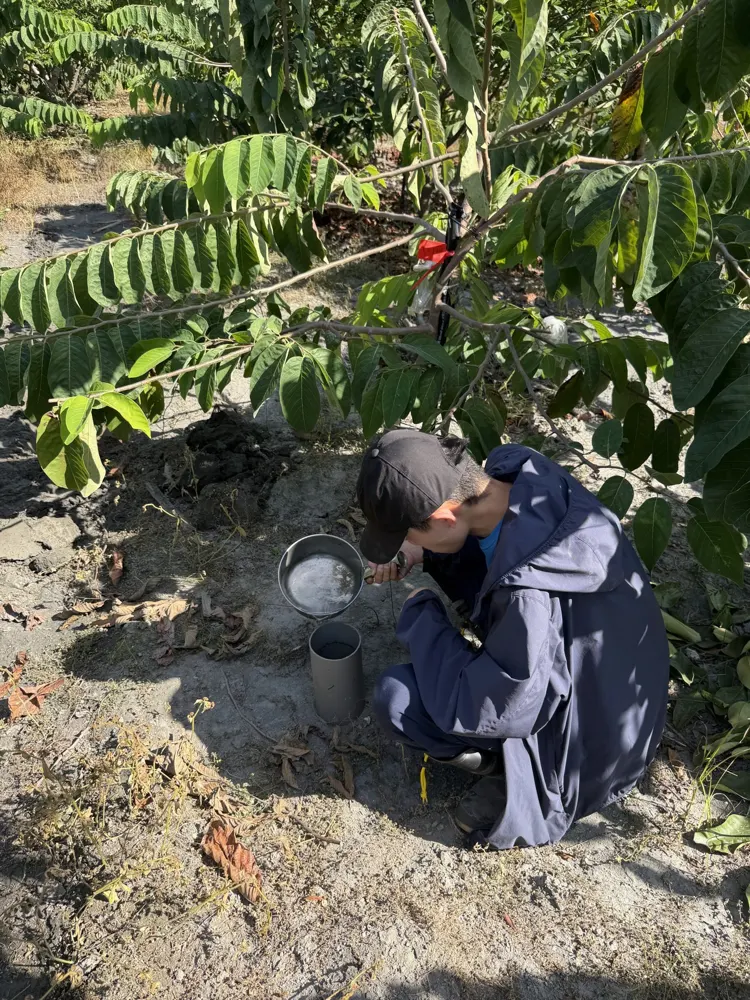
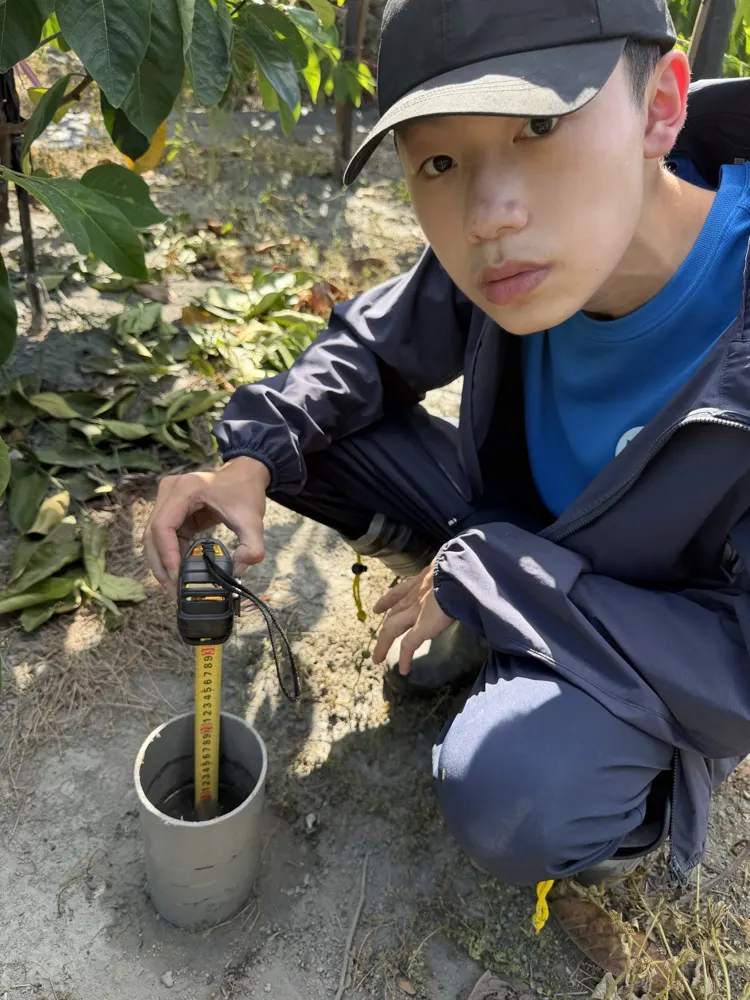
| 項目 | 美農村（噴灌） | 機場附近（淹灌） |
|---|---|---|
| 點 1：30 分鐘下降 | 5.0 公分 | 2.5 公分 |
| 點 2：30 分鐘下降 | 6.0 公分 | 2.5 公分 |
| 平均滲透速度 | 11 | 5 |
| 最後 5 分鐘速度 | 6、6 | 2.4、1.2 |
| 灌溉後 24 小時挖開，水滲到 | 約 40 公分 | 約 24 公分 |
| 鏽色斑點 | 無 | 40 公分處出現 |
限制：每地只測 2 點、只測一次；簡易單環法會高估數值，只適合比較兩地的相對差異；兩地灌溉方式不同，也會影響結果。
實驗三｜卑南圳與卑南上圳水混濁度 已完成
想知道的問題：兩條圳的水，哪一條比較混濁？圳水看起來混濁，是因為帶著上游沖刷下來的細小土粒。這些土粒隨灌溉水，尤其是淹灌時進入果園，可能沉積在地表、堵住土壤孔隙。
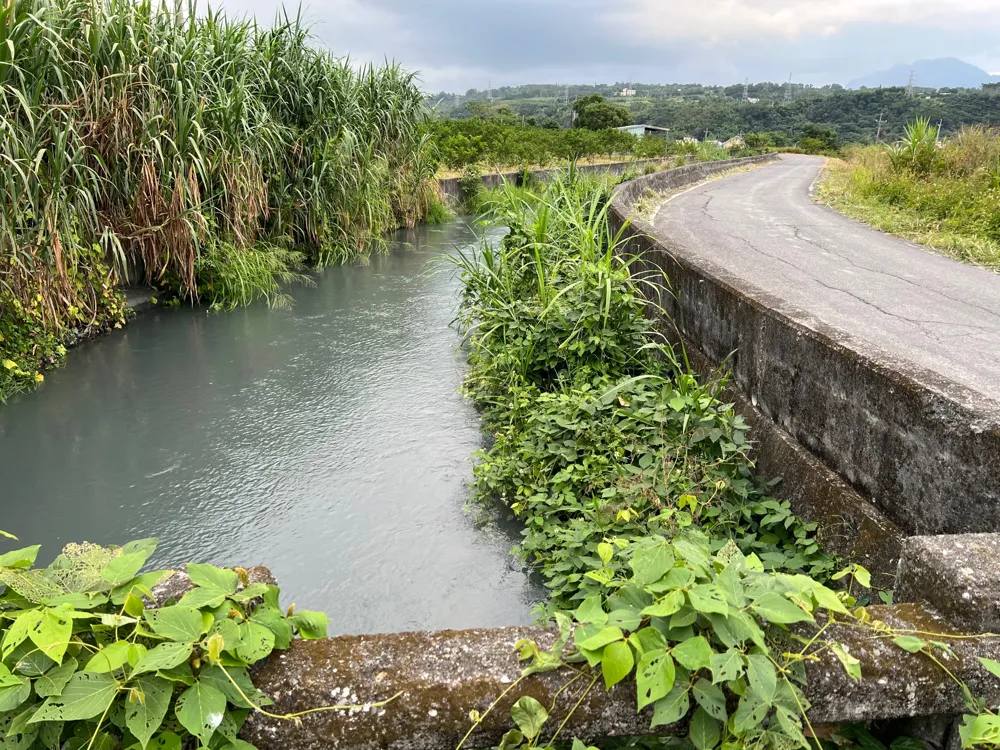
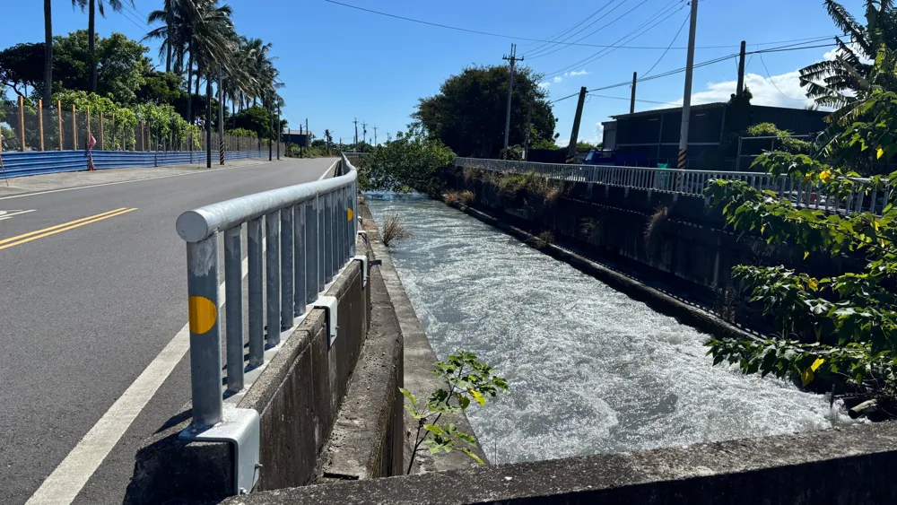
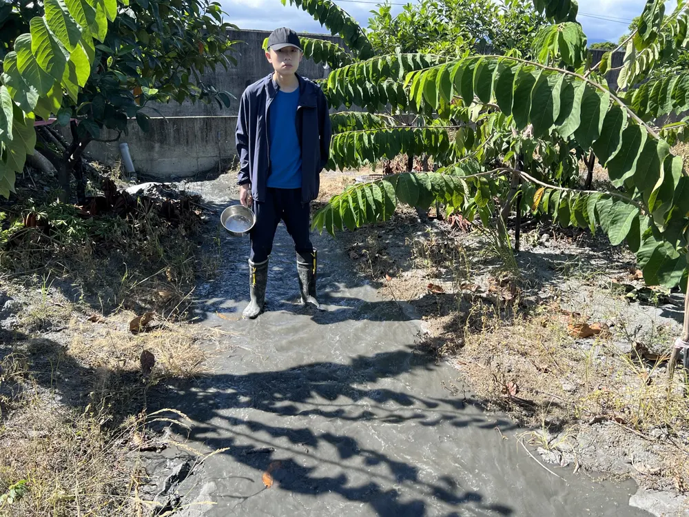
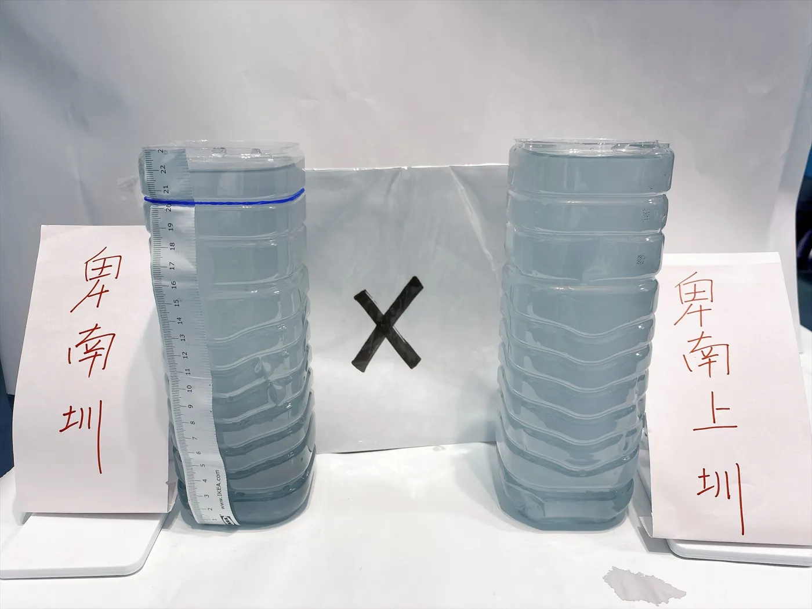
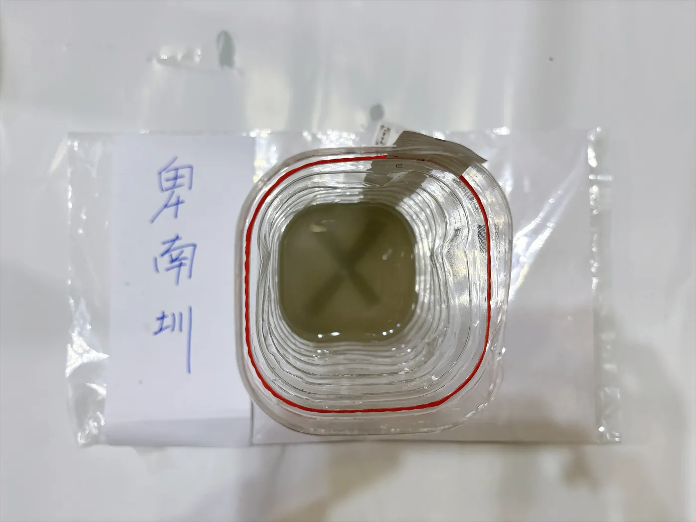
| 項目 | 卑南圳 | 卑南上圳 |
|---|---|---|
| 取水日期 | 8 月 25 日（前 3 天沒有下雨） | |
| 水的顏色 | 灰 | 灰 |
| 瓶子全高 | 23 公分 | 23 公分 |
| 透視度 | 5.2 公分 | 6.1 公分 |
| 灌溉的果園 | 機場附近 | 美農村 |
限制：只取樣一次，混濁度會隨降雨和上游狀況改變；透視度靠眼睛判斷，只反映懸浮物多寡，不代表養分或污染物含量。
接下來想研究的
土壤質地
美農村砂約占一半，機場附近黏粒約 40%，符合「山腳粗、平原細」。
下一步：把土樣送臺東區農業改良場分析質地、有機質與有效性養分，檢查我的估算準不準。
水分滲透
美農村滲得約為機場附近的 2 倍（11 比 5 公分／小時）。
下一步：量噴頭的給水速率，找出砂質壤土果園更省水、省肥的灌溉時間與頻率。
灌溉水
發現晴天的兩條圳水都帶有大量細土粒。
下一步：比較晴天與雨後的圳水，並把瓶底泥沙風乾，觀察它偏砂還是偏黏、淹灌後會不會改變果園表土。
進入大學後，我想學習的方向：
- 土壤物理：正確量測質地、保水與入滲
- 土壤肥力：依土壤分析施肥
- 植物營養：釋迦各生育期的養分需求
- 試驗設計：排除管理差異，真正比較兩地土壤
祖父母說，歡迎老師和同學到家中果園參觀、做試驗。希望有一天能一起找出 BH-01 長得快慢的答案。